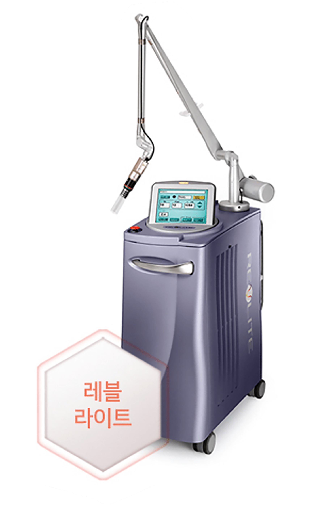
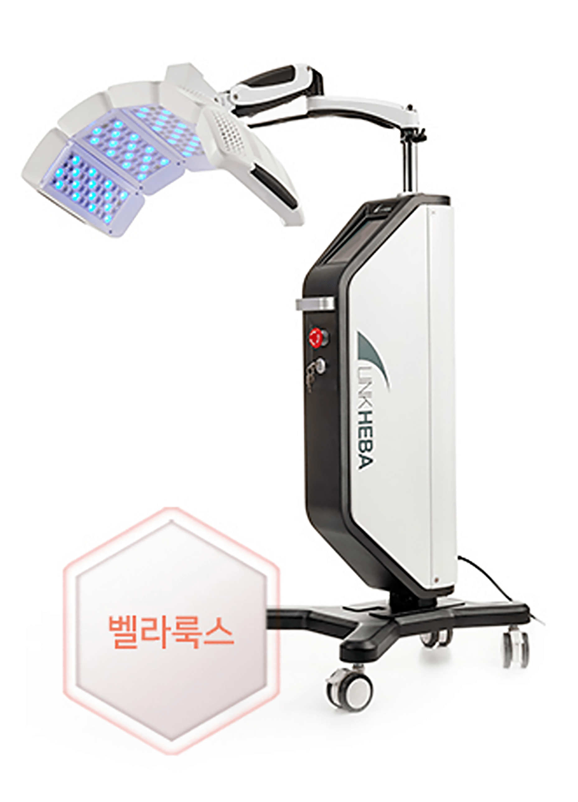
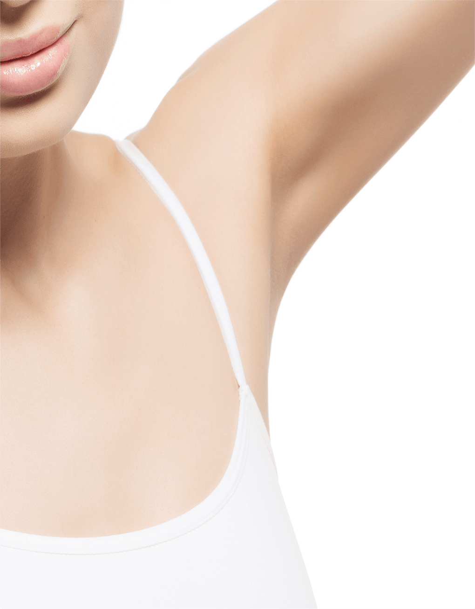
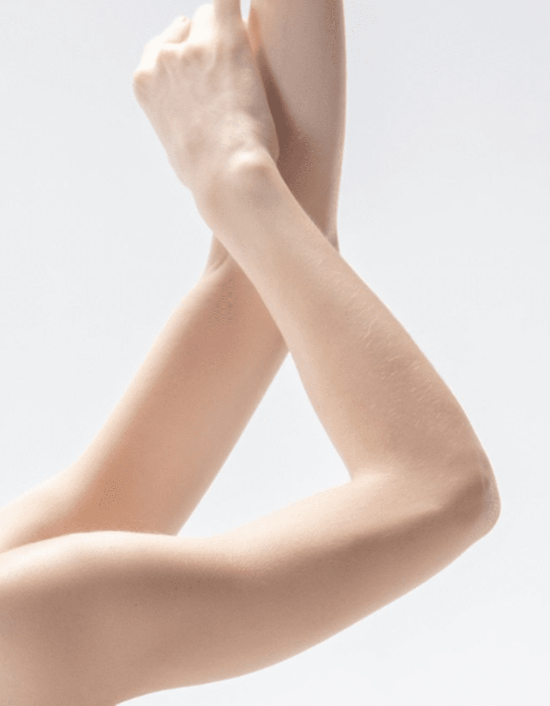
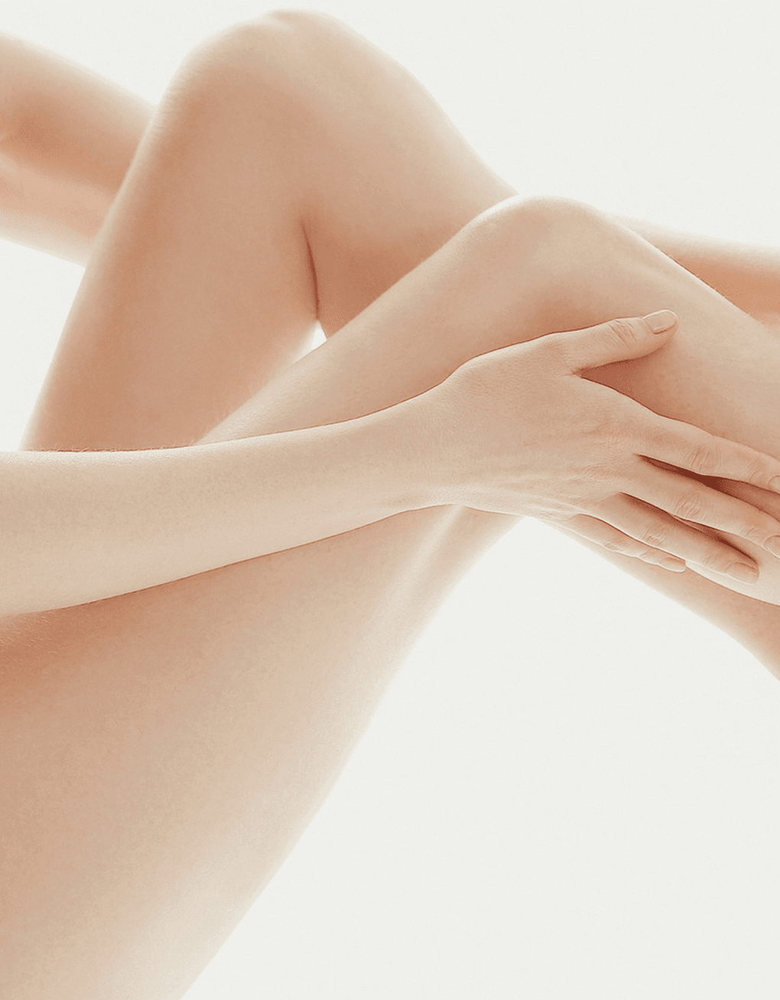
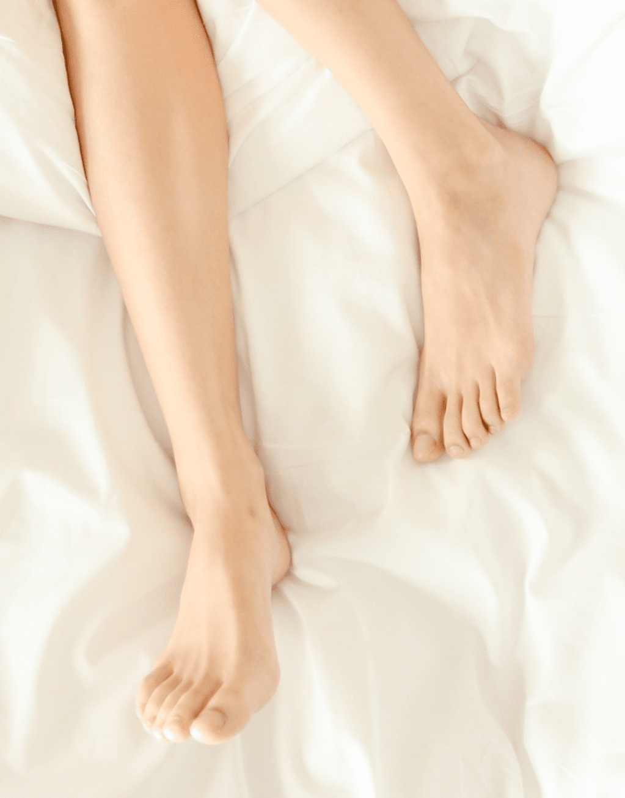
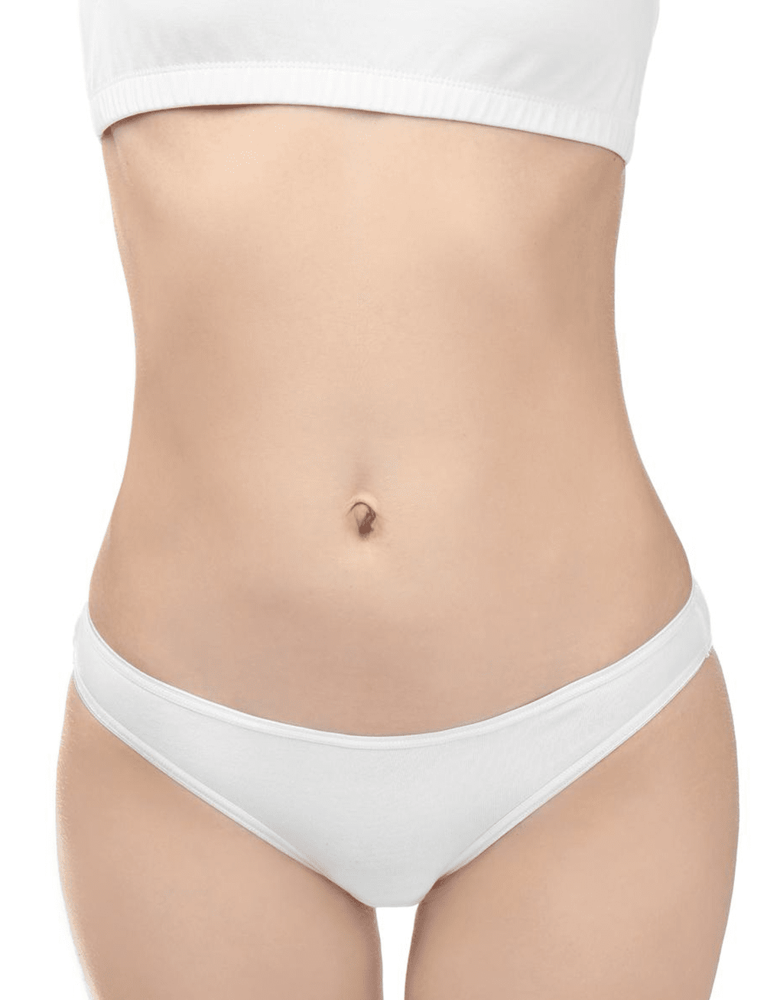

나를 위한 바디트리플 화이트닝
나를위한 산부인과의
“바디트리플 화이트닝”
은
의료진의 노하우와 기술력으로
색소침착으로 거뭇해진 피부 개선과
탄력 효과와 정상 피부의 손상을 줄여
멜라닌 세포만을 선택적으로
파괴하여 화이트닝 효과를 기대할 수 있습니다
- 수술시간 15분 내외
-
회복기간
시술 후
일상생활 가능 - 입원여부 없음
-
마취방법
마취크림 도포,
수면마취 가능 - 시술횟수 약 3회
바디트리플 화이트닝을 위한
뛰어난 효과의 레이저 선택
다양한 부위,
다양한 원인으로 거뭇하게 변한 피부를
깔끔하게 되돌릴 수 있습니다.
-

레블라이트- 기존의 레이저 토닝과 차별화된 PTP 방식
- 색소 병변의 자연스러운 탈락
-
피부 타입에 따라 특성화된
토닝 프로그램을 구성
높은 에너지를 짧은 시간 동안 순간적으로 방출하여
피부 표피와 진피에 존재하는 색소를 파괴하는 광 충격파
작용을 통해 멜라닌 색소를 잘게 부수어 인체 내부에서 흡수,
배출시키는 작용을 통해 색소를 제거해 주는 장비 -
 아포지 엘리트플러스
아포지 엘리트플러스- 단계별 피부 상태에 따른 맞춤 치료
- 멜라닌에 선택적으로 적용하여 멜라닌 제거
-
755nm , 1064nm 2개의 파장으로
효과적인 미백 시술
고출력의 755nm 파장의 알렉산드라이트는
멜라닌 흡수율이
높아 멜라닌에 선택적으로 작용하여
멜라닌 제거에 적합
1064nm 엔디야그 레이저는 검은 피부와 깊은 멜라닌 치료,
혈관과 수분에도 효과적으로 반응 -

벨라룩스- 색소침착에 최적화되어 있는 레이저 기기
- 4가지 파장 중 선택, 선택적 맞춤 시술
- 850nm 파장, 멜라닌 색소 파괴, 생성 억제
특정 파장대의 LED 광선을 피부에 조사하여 효율적으로
피부를 개선하는 장비로, 진피층까지 광선이 침투 가능하며
3가지 파장으로 동시 조사 가능
바디트리플 화이트닝
시술 부위
-

겨드랑이
-

팔 / 팔꿈치
-

무릎 / 허벅지 / 종아리
-

발 / 발꿈치
-

복부 / 사타구니
바디트리플 화이트닝
대상자
-
색소침착 고민으로 노출이 꺼려지는 분
-
습진, 마찰 등으로 색소침착이 발생한 경우
-
깨끗하고 완벽한 바디를 원하는 여성 분
-
미백 기능성 크림으로 효과를 보지 못한 분
바디트리플 화이트닝은 왜
나를위한 산부인과?


-
풍부한 시술 경험,
고객에게 꼭 맞는
정품 기계와
에너지 최적값 -
6인 산부인과
전문의의
책임시술 -
꼼꼼한 사후관리를
통해
오래가는
시술 효과 -
세심한 진료와
시술을 통한
드라마틱한 효과

프라이빗한 휴식 과 회복
나를위한산부인과에서는 치료를 받는
환자분들이
긴장을 완화하고 편안한
마음으로 쉬실 수 있도록
고급스럽고
편안한 분위기의 1인 회복실을 제공합니다.
미백
시술 후 주의사항
시술 후 주의 사항은 개인 차가 있을 수 있습니다.
-
01
물집이 생길 경우 터뜨리지 마시고, 연고를 잘 발라주세요.
(수포는 자연히 흡수됩니다) -
02
전체적으로 생긴 딱지는 자연 탈락할 때까지 놔두셔야 합니다.
강제로 딱지를 제거하면 얼룩이 질 수 있고 회복 기간도 늘어나게
됩니다. -
03
시술 후 7~10일 정도 스크럽, 탕 목욕, 수영 등 물리적인 자극은
피해주세요. -
04
시술 후 진물이 나고 따끔거리며 아플 수 있으나, 정상 반응이므로
걱정하지 마세요.
다만 통증이 심해지고 물집 관리가 어려운 경우
병원으로 내원하여 관리 받으시기 바랍니다. -
05
시술 당일 얼음팩 찜질은 1회당 5분 이상 지속하지 말아주세요.
동상의 위험이 있습니다. -
06
1주일 후 내원하시어 미백 관리 레이저를 받으시면 더 큰 효과를
보실 수 있습니다. -
07
3~4주 간격으로 시술 시 만족도가 가장 높으므로 시술 주기를
잘 지켜주세요.